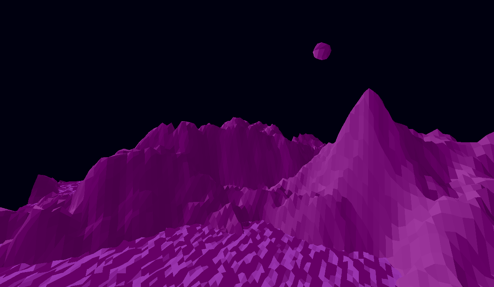
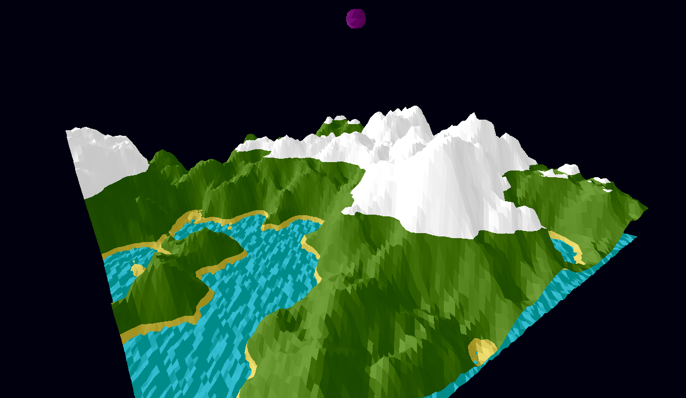
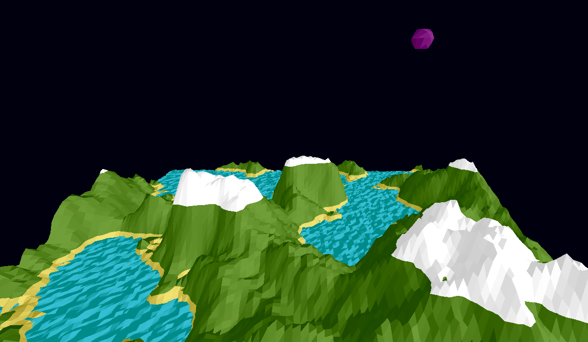
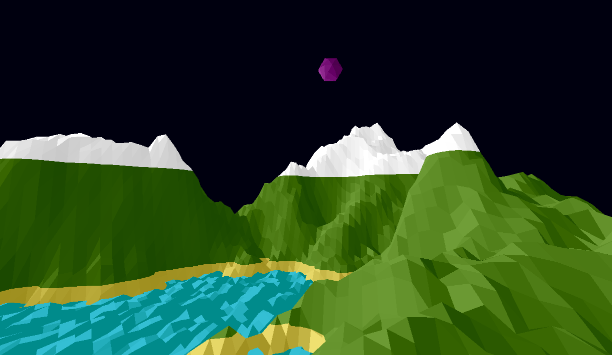
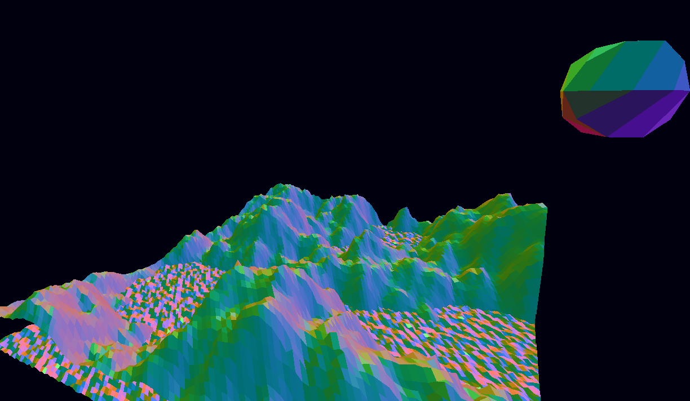
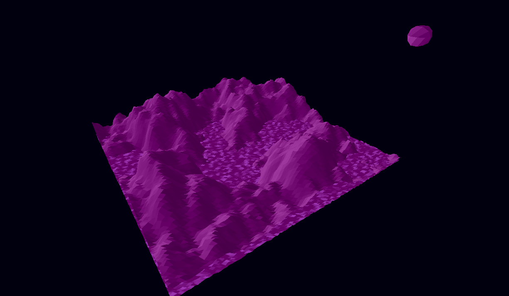

Purple World
Tyler Pearson

Welcome to Purple World!
Purple World is a unique world where anything is possible,
immerse yourself in all its glory!
Purple World is the less-publicized sister region to
Neverland, as seen in the classic documentary titled "Peter
Pan". Whereas in Neverland individuals do not age, inhabitants
and visitors alike of Purple World age way faster!
Overview
Purple World is a procedurally generated, flat-shaded terrain. A new map is
rendered every build using a Perlin noise generation algorithm. The water
is a simple triangle mesh with random initial height offsets, each vertex
is shifted up and down to simulate a water-like motion. There are 3
viewing modes and 5 directional lighting options, one of which rotates
around the map. The sun always shines on Purple World, as does its moon
which rests in the northeastern sky.
Directions to Purple World
- An executable (named "projf") is provided in the build directory. This
should be executed from the build directory, as the path to the resource
directory is hard-coded. This also assumes the necessary libraries are
pre-installed on your machine
- To build from scratch on linux, create your build directory in the main
directory, cd into it, run "cmake ..", followed by "make -j4", and your
projf executable will be created
- For running on mac or windows, or from Visual Studio, refer to the file
"build-instructions.md"
- Note: a bug occurs occasionally where distorted columns of color appear.
This is a bug, although it is unclear if this is due to a coding error
or due to my hardware's gpu deficiency
Navigating the Waters
- WASD to move camera left-right and forward-backward
- Q to move up, E to move down
- Move mouse to rotate camera angle (move to desired target)
- P to toggle color mode
- C to toggle lighting direction
- ESC to exit
Trending Photos

Helicopter ride around Purple World #SkyView

Selfie from my hotel balcony

Bayside with bae

Ab-normal-ly beautiful sunset

#Blessed
Experience the Magic

New arrivals (dis)orientation video

Rolling mountains and Shifting tides

Timelapse #TBT
Future Attractions
- Keypress to walk through terrain generation steps
- Cmd pass-in values for amplitude, interpolation, octaves and roughness
- SkyBox
- Water transparency
- Change hard elevation breaks to soft breaks
- Shading per elevation mode
- Hierarchical bird companion
- Moon residue particle system
- Trees
Referrals